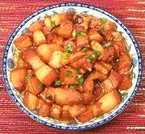

|
Pork Belly, Red-BraisedChina - Hunan | ||||
| Serves: Effort: Sched: DoAhead: |
3 main ** 1-1/4 hr Yes |
A favorite dish of Chairman Mao (it's "Red" cooked, after all). You can vary the richness by what part of the pig you use (see Note-1) but it shouldn't be too lean. This dish can be eaten as is, but is also often finished with other ingredients. | |||
|
1 2 1-1/2 1 ar ------ 3/4 1 2 1/2 ------ 1 1/2 2 |
# T T T --- in in --- T t |
Pork belly (1) Oil Sugar, white (2) Rice Wine Water -- Spicing Ginger root Star Anise Chilis, dry (3) Cassia (4) --------- Soy Sauce Salt Scallions |
Prep - (20 min)
|